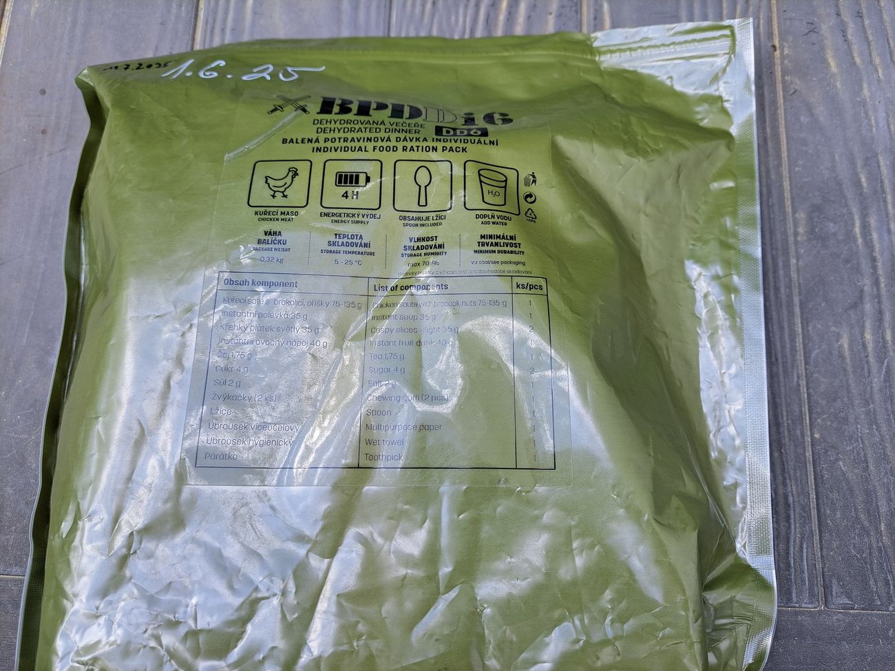
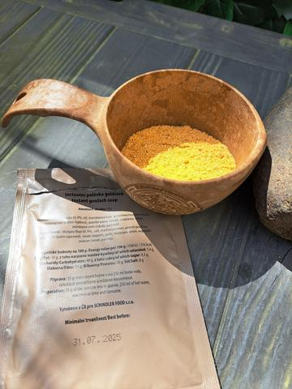
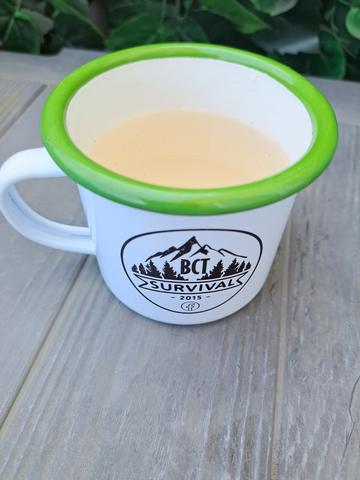

Recenze a výbava
BPDDi6 DD6 – kuřecí soté s brokolicí a oříšky






Modernizace a nové verze BPD
Od roku 2024 Armáda ČR plně zavedla šest variant BPD, včetně jedné dehydrované verze. Tyto dávky byly navrženy s ohledem na nutriční potřeby vojáků a obsahují širokou škálu potravin, které zajišťují potřebný příjem energie a živin.
Hlavní vylepšení nových verzí BPD:
Modularita a variabilita – vojáci si mohou vybírat ze šesti variant podle aktuálních potřeb a klimatických podmínek.
Rozdělení na tři části – dávky obsahují snídani, oběd a večeři, což umožňuje lepší rozložení energie během dne.
Moderní složení – energetické gely, proteinové tyčinky, sušené maso, hotová jídla, čokoládové snacky a další potraviny vhodné pro dlouhodobé skladování.
Zlepšená skladovatelnost – nové balení umožňuje delší životnost a lepší manipulaci.
Nutriční hodnoty a zdravotní nezávadnost
Každá dávka byla vytvořena s důrazem na dostatek kalorií, makroživin a mikroživin potřebných pro fyzicky náročné podmínky. Na vývoji se podílely vojenské zdravotnické instituce a Veterinární ústav, který testoval bezpečnost jednotlivých složek.
Osobní zkušenosti a praktické využití
Vojáci hodnotí nové BPD pozitivně – hlavní výhodou je širší nabídka chutí, vyvážený energetický příjem a kvalitnější balení. Dehydrovaná verze je oblíbená díky nízké hmotnosti a možnosti přípravy horkého jídla přímo v terénu.
Nové bojové potravinové dávky tak nejen zvyšují komfort vojáků, ale také odpovídají moderním požadavkům na výživu, logistiku a dlouhodobé skladování.
Na webu jsou vybrané fotky. Všech 14 fotek z této potulky najdete na Facebooku BCT Survival.